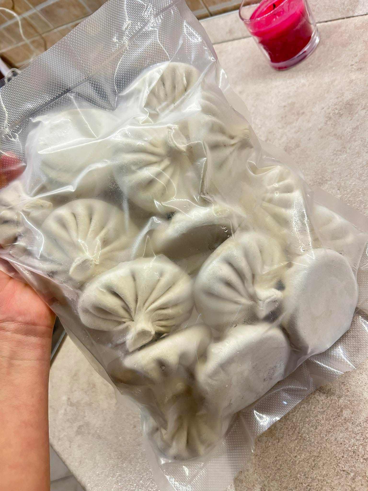

რჩეული ასორტიმენტი
ჩვენი მენიუ
 ბესტსელერი
ბესტსელერი
ქალაქური ხინკალი
საქონლისა და ღორის რჩეული ხორცი, ნორჩი მწვანილები და არომატული ქართული სუნელები.
 ტრადიციული
ტრადიციული
ყველის ხინკალი
ყველის კლასიკური რეცეპტი მწვანილის გარეშე,

ვაკუუმ-შეფუთვადაფასოებული (ნახევარფაბრიკატი)
ინოვაციური ვაკუუმ შეფუთვა სახლში მოსამზადებლად. ინარჩუნებს სიახლესა და პირვანდელ გემოს.